💰客户给我20w，我帮她赚了200w
来源：https://hjlrkivx2z.feishu.cn/docx/IMzSdE39eoVBX1xwLzgcKTnDnme
现在在做播客的复盘
小红书饰品赛道代运营回报率1000%的复盘
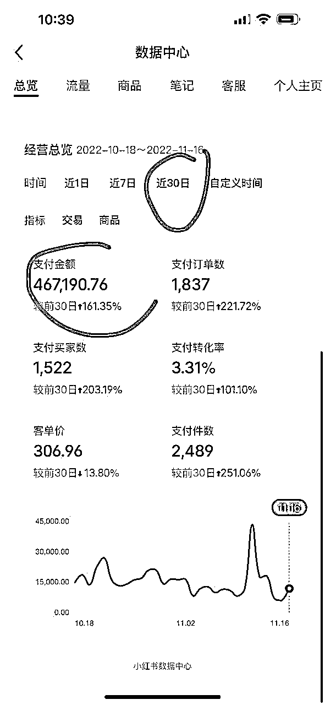
人物标签：当小时，以前自己做自媒体电商，现在帮别人做自媒体电商
背景：从十年前的QQ空间开始享受到社交媒体的红利，一路从微信微博公众号迁移到抖音到小红书，不断摸索流量和变现的逻辑。
收益：服务费20w，提成12%
项目亮点：三个月时间，小红书电商做到细分领域销售排行榜第一
产品是什么：珠宝饰品
流量哪里来：小红书
如何变现：短视频带货，提供电商内容服务
分享会ppt源文件⬆️
分享会录音36min➡️
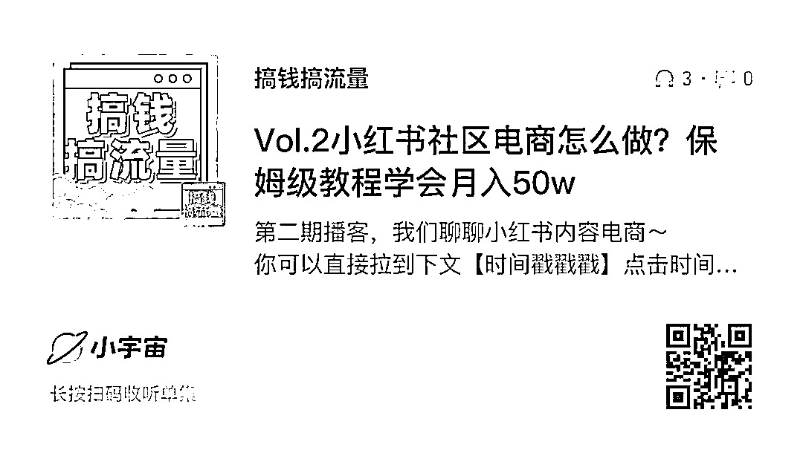
这是我们转行后接的第一个客户，沿用了给自己做的 电商的团队，从零到一做起来的，从拍摄剪辑甚至也会反向参与选品
下面内容来自给得到校友做的分享方法论：
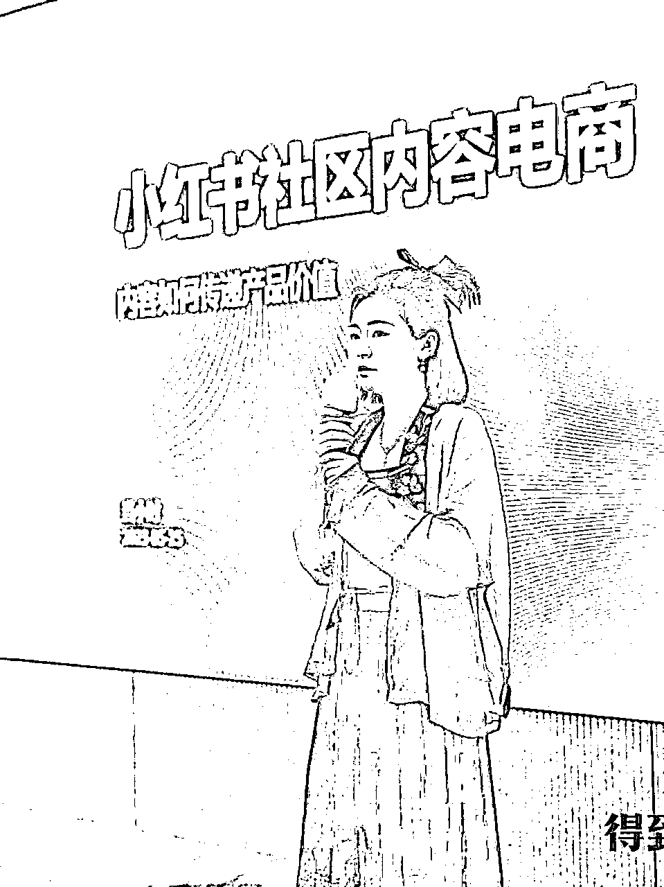
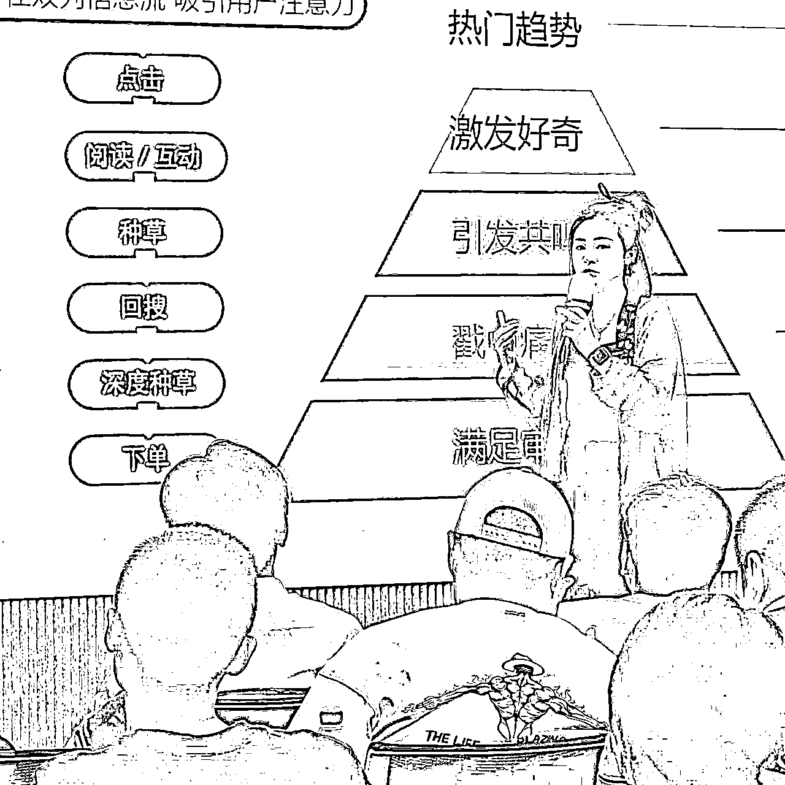
来自小红书官方商务部的定义
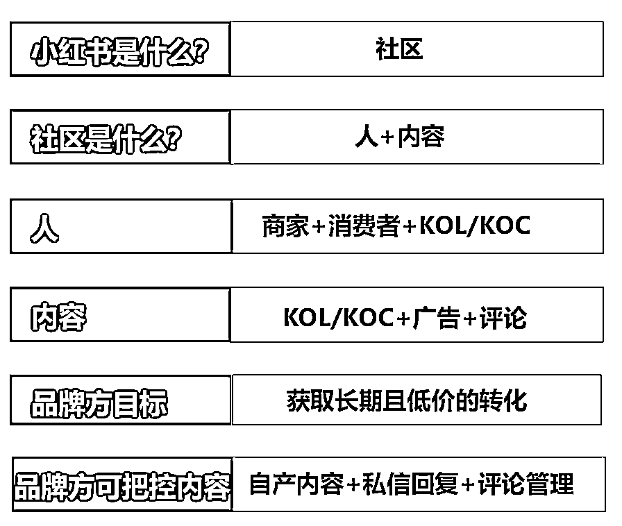
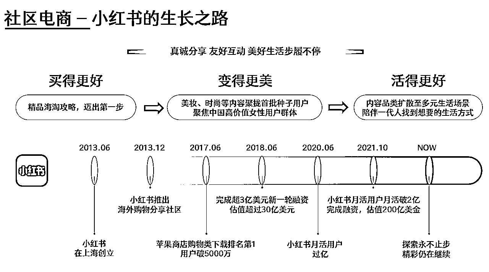
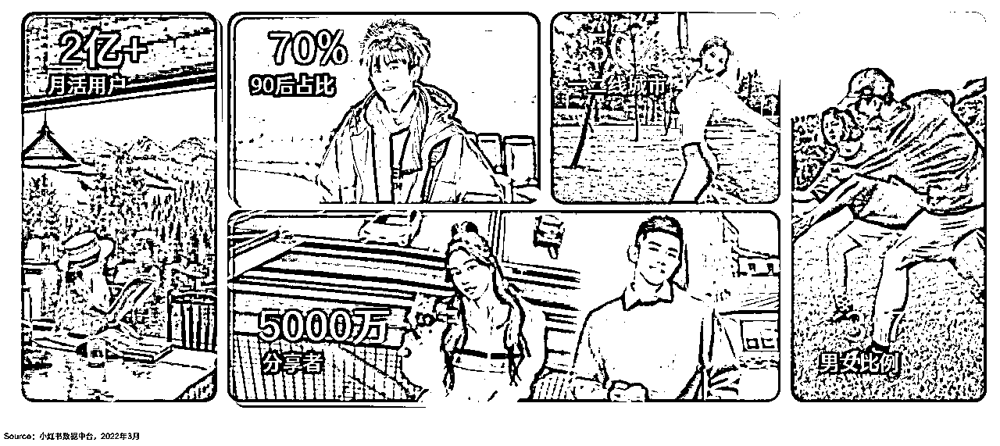
自己操盘的案例数据分析
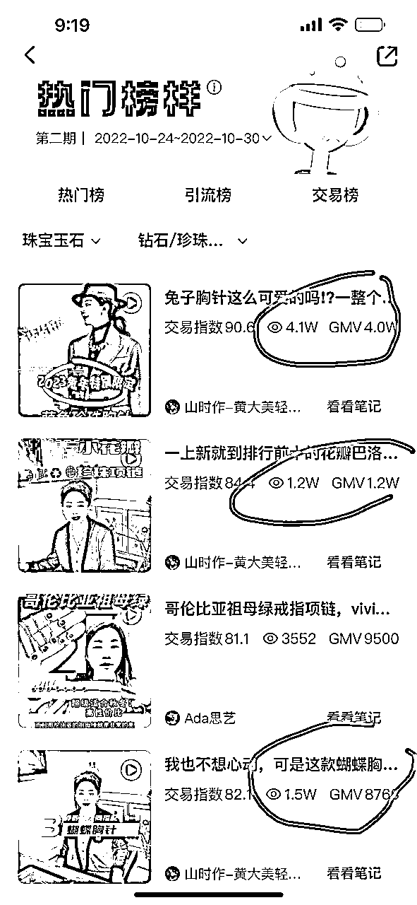
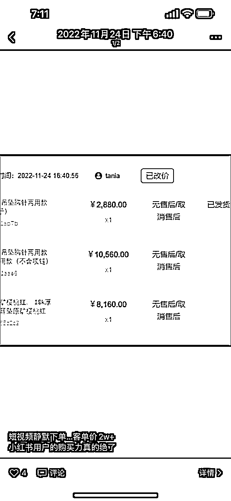
小红书运营销售额做到行业第一，以下是一些经验分享：
- 分析市场趋势：在开始运营前，需要对市场进行充分的分析，了解消费者需求和偏好，以便更好地制定营销策略。
- 确定目标客户：根据市场分析结果，确定目标客户群体，并制定相应的营销策略。
- 优化内容：在运营过程中，需要不断优化内容，提高用户体验和参与度。
- 加强与消费者互动：通过各种形式的互动，如在线咨询、促销活动等，更好地了解消费者需求和偏好。
- 利用社交媒体平台，如小红书、抖音、快手等，进行有效的推广和营销。
- 确定最佳实践：在运营过程中，需要不断探索和实践最佳实践，不断完善营销策略和内容。
- 持续改进：随着市场变化和消费者需求的变化，需要持续改进营销策略和内容，以保持竞争力。
当然，不同企业和品牌的情况不同，需要根据自身情况进行适当调整。
如何做好种草内容
好内容+ 好流量=长期高效率种草
好内容是爆文的基石，更是流量产品的弹药
内容选题
实用价值：干货合集，经验教程
情绪价值：真实故事，高颜值人/物/景，走心/搞笑剧情
万能公式：以下内容2～4种组合使用。
例：
- 使用场景：.宿舍/学校 约会/出行宅家居家办公职场..
- 需求/功能：美白保湿抗老拍照妆教解馋扛饿减脂瘦身…
封面形式：单图/拼图
封面比例：3:4/1:1/4:3
封面关键字
- 成交流程
点击➡️阅读➡️互动➡️种草➡️回搜➡️深度种草➡️下单
- 用户点击的底层逻辑
热门趋势 制造预期 激发好奇 引发共鸣 戳中痛点 满足审美
标题
埋热词引流量
激好奇引点击
切痛点找共鸣
聚焦细分场景
多用功能需求词
- 善用关键词、突出重点：有助于系统分发和推+用户更易Get关键信息
- 在标题中适当添加数字：直观信息抓人眼球+提高内容可信度
- 利用标题与用户互动：引发用户好奇心+提升笔记互动率
- 如何提高种草率
解决实际问题和提供情绪价值
用户更喜欢真实体验后的真诚分享
客观描述产品使用心得的内容会更具备种草力
内容范式
- 吸引注意力： 痛点or好处
- 建立信任：痛点or好处和产品卖点结合
- 促成转化：提出解决方案
品类 功效 风格 颜色。。。
直接围绕品类词+利益点进行创作
用品牌词/产品词/品类词来触达
场景化 教程干货。。
需求度低，通常需 要利用场景化内容来软性种草
商域流量进阶指南
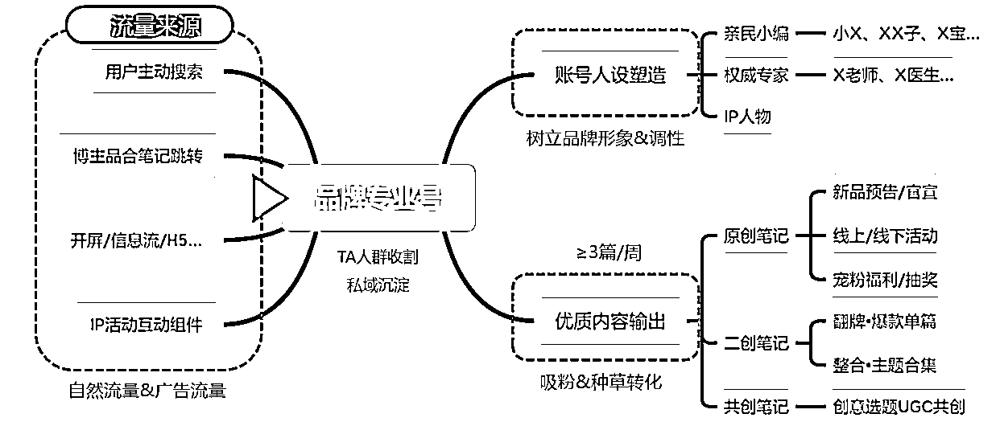
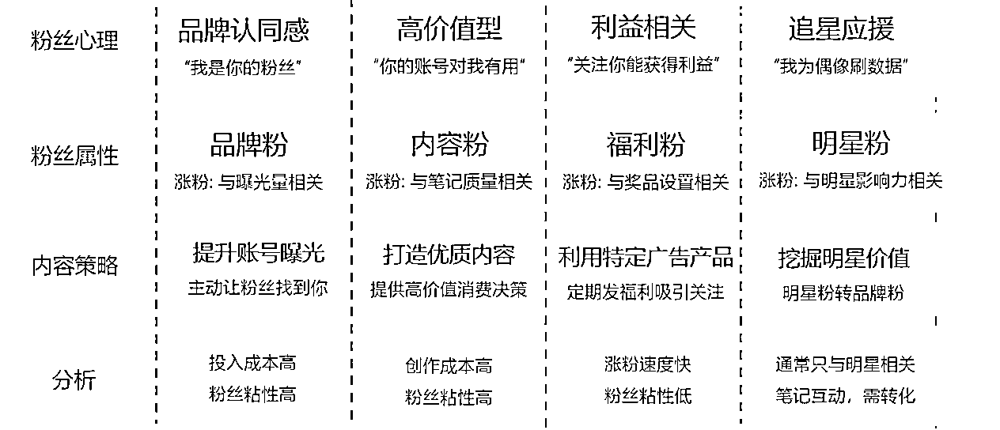
- 主要内容类型
产品上新官宣
明星代言物料
产品使用教程
KOL笔记翻牌
抽奖福利
活动预告
如何花钱买博主的内容
头部kol≥50万
KOL≥1万
KOC
质感+影响力担当
种草+专业担当
口碑+氛围担当
- 泛推
快速打造热度 高度覆盖 触达粉丝跟风效应 提高调性
- 粗推
真实晒单反馈 买家秀， 辅助决策 起“SEO”优化功能
如何筛选博主
- 基础数据
1⃣️互动效果：粉丝量＜赞藏数， 且赞藏数至少是粉丝量的1.5-2倍以上， 但也不能太高， 太高则代表账号有爆文、 内容不错， 但转粉率低， 且不稳定。 5000粉丝以下， 近期笔记平均点赞不能低于10； 5000粉丝以上， 近期笔记平均点赞不能低于20； 1w粉丝以上， 近期笔记平均点赞不能低 于50； 5w粉丝以上， 近期笔记平均点赞不能低于200； 10w粉丝以上， 近期笔记平均点赞不能低于500
2⃣️涨粉情况：是否存在掉粉现象； 笔记数量不能太多， 且篇均涨粉不能低于100+;粉丝量越高， 篇均涨粉要求也会变得越高。素人 (粉丝量300-5000) 要求可低一些
3⃣️粉丝粘性：全面评估KOL粉丝粘性、活跃度及优质粉丝占比， 粉丝质量越高的KOC， 粉丝影响力、信任力越强。
- 匹配程度
1⃣️人设匹配度：KOL人设、 内容风格调性与品牌调性是否相符——这是品牌信息能够传播的基础
2⃣️Ta匹配度：KOL粉丝的年龄、性别、地域分布： 与品牌目标TA重合度
3⃣️兴趣匹配度：通过粉丝解析， 了解粉丝内容偏好、互动兴趣—判断与KOL的风格是否接近， 风格越接近， 越能迎合用户偏好， 起到种草目标
4⃣️垂类标签度：垂直领域创作者更适合个性化推荐算法机制， 选择账号权重高且小红书账号标签和种草笔记分类一致的达人。
- 内容质量
1⃣️内容爆款率：30日内爆款率， 能更好地反映出阶段性KOL的创作实力和投放价值——这是品牌效果投放的保障
2⃣️内容真实性：数据浮动太稳定≈刷量， 太稳定的判断标准： 浮动值＜20 数据浮动太夸张≈赌博， 夸张的判断标准： 浮动值＞ 100， 甚至更高； 这代表内容创作水平不稳定
3⃣️内容更新率：至少周更， 即近30天笔记更新至少5篇， 日更最多3篇， 即近30天笔记更新最多90篇。
4⃣️舆情健康度：直观了解粉丝对于KOL口碑及态度， 讨论关键词， 正向舆情是赢得粉丝信任的重要保证
- 性价比
1⃣️达人报价：博主合作报价一般是在博主粉丝量的10左右%
2⃣️互动成本：点赞的1.5倍≈互动量， 而互动量的10倍≈阅读量博主合作报价/近期笔记平均点赞的1.5倍≈单个互动成本， 互动成本： 互动成本在5-10性价比较高
- 商业能力
1⃣️商业经验 ：KOL过往所服务的品牌/行业：与品牌是否相关、以及客户评价
2⃣️种草转化力 ：小红书电商转化数
3⃣️评论互动效果 ：评论区是否有真实询问链接、问尺码、问地方、问感受等

- 以产品策略为底层基础
产品特性是引爆小 红书的底层因素
- 以内容策略为核心
优质内容及运用套路大 大提升投放效果效率
- 以关键词布局为切入口
搜索页关键词是影响 品牌口碑关键节点
- 以投放节奏为顶层设计
有条不紊地投放节奏， 有序收割
- 新入驻时，数量》质量
迅速铺量 多
关键词测试 集中
打爆款
首发小红书→辐射其他社交平台
- 这类产品有爆款基因
刚需+高颜值+低价+DSR高评分
ppt
现场的图片
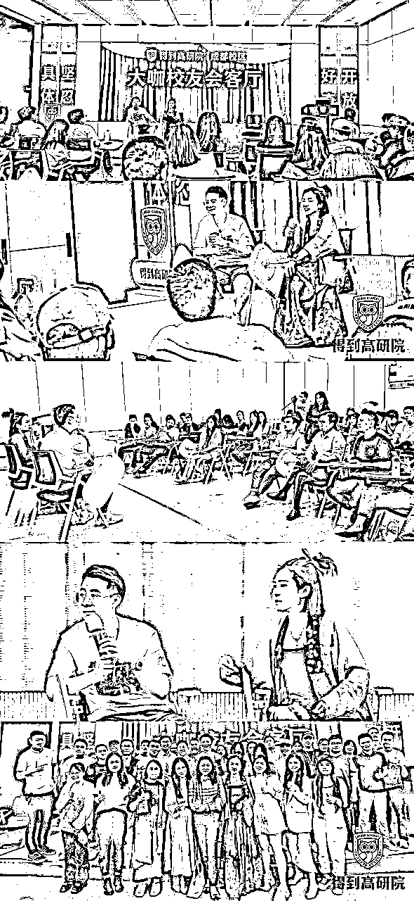